00:00:00 · 0.500s
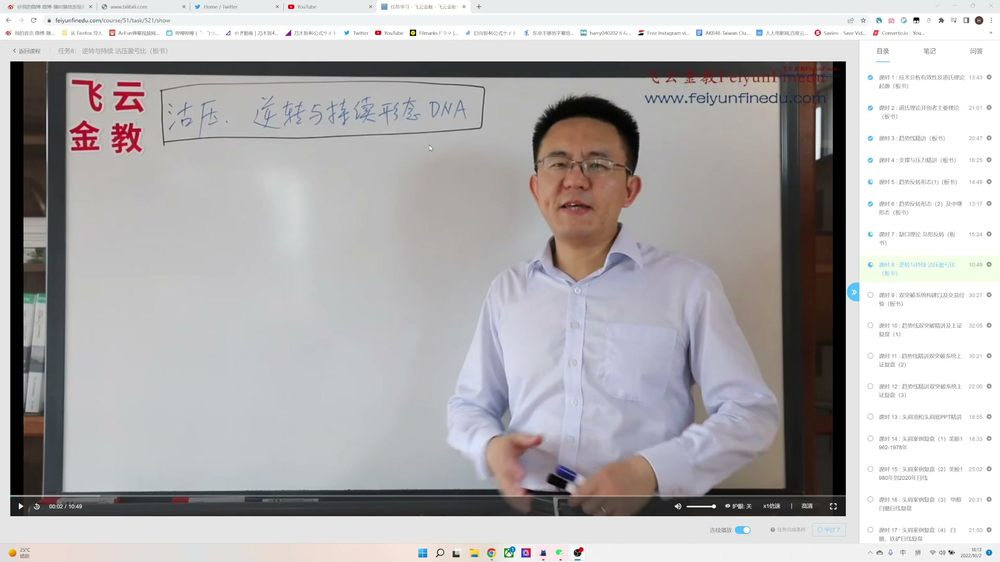
亲爱的朋友朋友大家好 好我们把所有的知识点学完了之后啊 我们现在就可以来寻找 我们金融交易的DNA 这个也是我专业的一个名词啊 就是说我们这是金融交易里面最微小的结构 只要你把这个最微小的结构能够找到 在这个结构处开仓 你就一定能够赚钱啊 好在讲这个最微小结构之前啊
画面保留原分辨率；时间来自实际解码 PTS。附近语音是自动识别候选。点击画面可查看原图。

亲爱的朋友朋友大家好 好我们把所有的知识点学完了之后啊 我们现在就可以来寻找 我们金融交易的DNA 这个也是我专业的一个名词啊 就是说我们这是金融交易里面最微小的结构 只要你把这个最微小的结构能够找到 在这个结构处开仓 你就一定能够赚钱啊 好在讲这个最微小结构之前啊
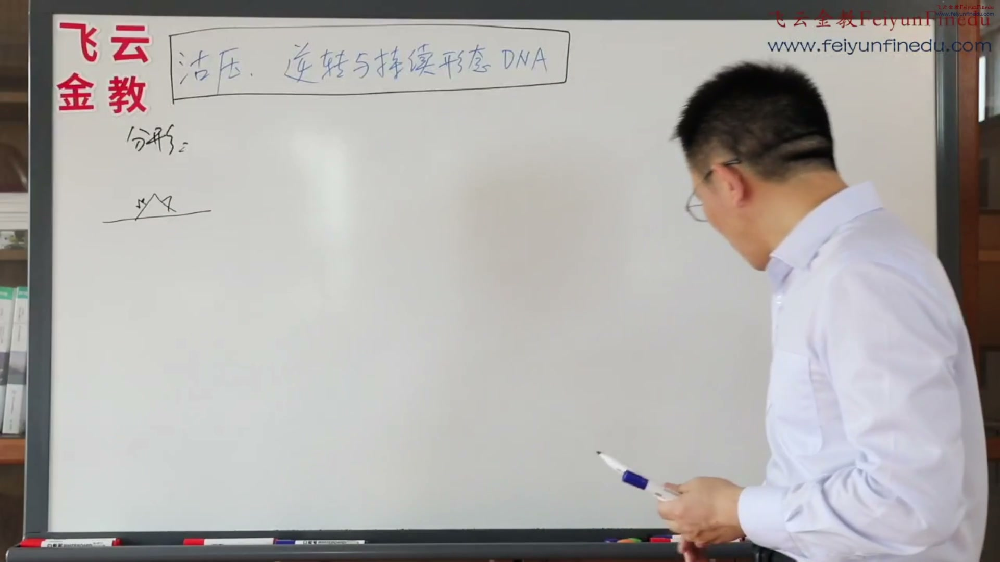
这个大自然的很多的事情 可能都是最微小 最基本的东西组成的 我们说计算局语言 就是0加1 太简单了 但是汇在一起 就创造了奇迹 我们好多的这个东西 都是有几何分形来构建的 我们在PPT面举个例子 最简单的例子 一条直线 你把它这样子折一下 再把这里面每一条直线 这样折一下 每一条直线折折 一直到最后它就成了一个 非常美妙的一个图案 好 那么我们金融交易市场里面 有没有这种可以找到的 在一分钟五分钟十五分钟日线月线 都可以找到用来赚钱的这么一种形态呢 有这个就是逆转与持续形态 好什么是逆转与持续形态 就是当我们一轮趋势上往上涨 涨到了我们所谓的一些形态 比如这个地方是一个头肩形态
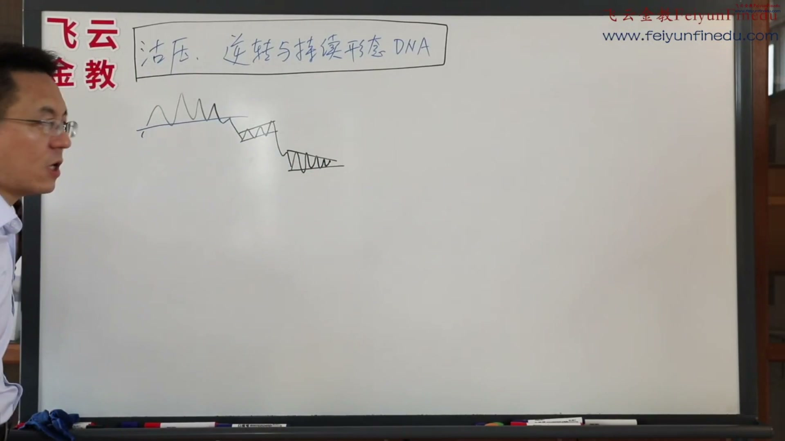
在这个地方脖子线之后 回抽 回抽 无力再往下跌 跌了一般的 这个地方它会有一个大的折腾 所以这个地方可能会有一个上升的 这么一个奇形 这个折腾完了之后继续下跌 就宣示着什么 这个行情有逆转 变成了持续 好 再次下跌 这地方可能会折腾一个三角形 根据我的经验 三角形折腾完了 再往下跌 会跌成一个什么 奇形 因为力量越来越弱了 最后奇形一个恐慌性暴跌 跌完了 A行情跌完了 就开始反转 好 行情反转的时候 这一波一波的反转 慢慢的底下吸筹啊 做了一番形态 最后终于在这个地方 你们可以用威克夫的理论解释也好 还是在里面解释也好 最后整个的形态突破
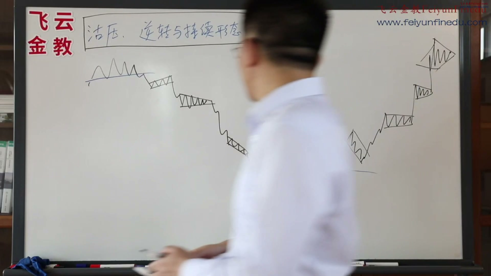
这一波就成了什么 就是又逆转了 逆转 逆转完了之后 这一波就开始持续 持续上去 第一波回抽一般的很猛烈 我们又做一个起行 下降起行 上去上抽 做一个三角形整理 相提整理 再上去三角形整理 再上去顶部的一个菱形 这一波洗菜又走完了 所以在这两波的逆转持续 逆转持续 怎么样 这地方又逆转又持续 好 行情 这个行情就是所有的一分钟
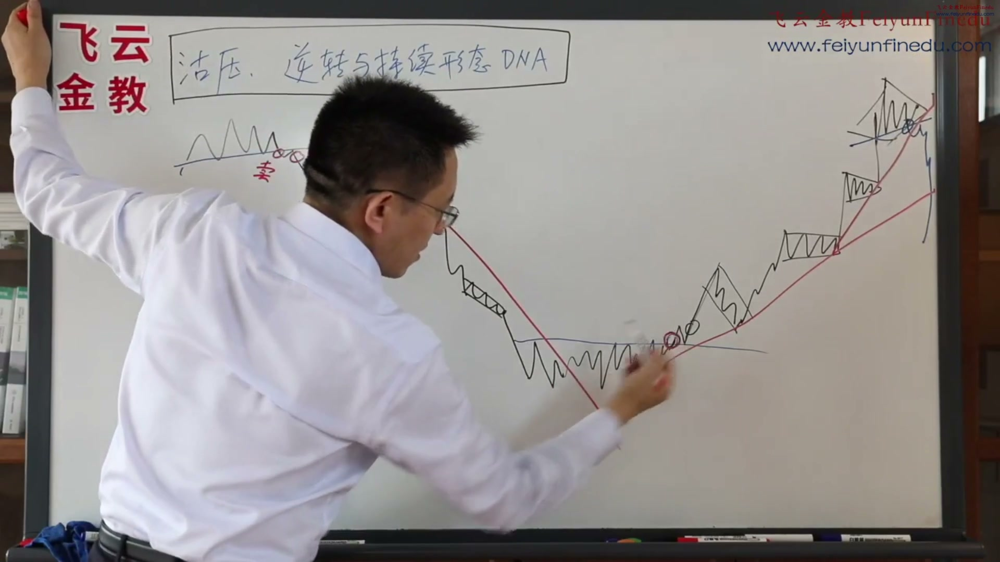
看我们大部分复盘 全都是这样子的一个基本结构 完完全全的一个基本结构 基本结构 在这个基本结构里面 我们如何能够赚到钱 我们赚到钱 就是在这开仓 在这开仓进行卖 这是我们的开仓点卖 在这突破 在这不要动 下面都不要动 因为你根本不知道 它后面是不是会跌下去 风险很大 在这开仓买 第二个突破回走 再次突破再买 在这行情持续的时候再买 在这再加仓买 在这再加仓买 然后突破趋势线 跌破趋势线的时候 50%资金出来 如果双突破又跌破趋势线
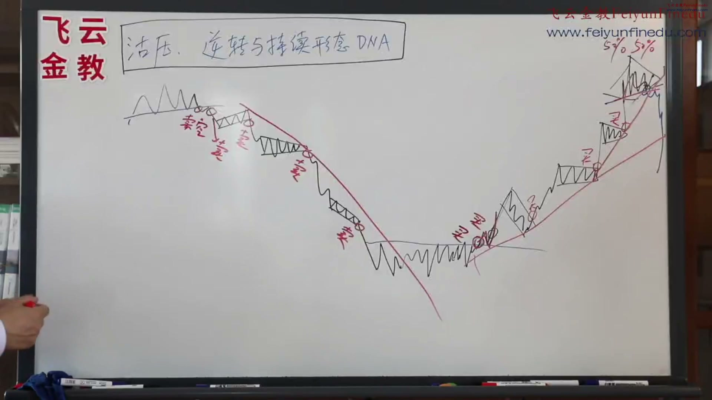
十五分钟 五十分钟 还是日线 都是这么做 这个地方 逆转的时候 它先突破了 先卖 卖空 逆转 继续卖 突破 卖 卖 卖 我们就在每一个行情的过程中间 做这么一波一波的 加仓 加卖 加买 所以这样子 我们就建立了一个明确的交易系统 什么时候开仓 什么时候止损 止损肯定是在这 止损 那你在这卖的话 止损是在这 卖止损是在这 卖止损是在这 那么这个买 止损放下面 买止损放下面 买止损放下面 止损放下面 止损放下面 所以这一波一波的
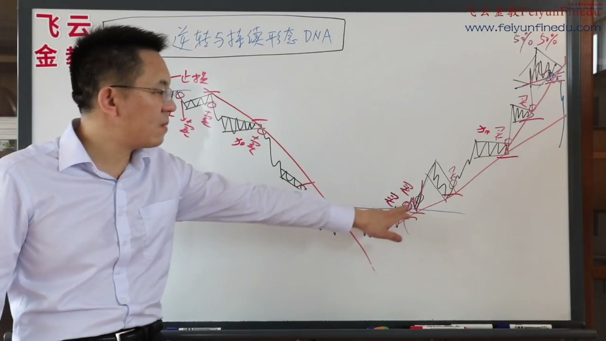
非常明确 非常简单 非常简洁 非常有用 好 我们后面可以 这个同一个模式 大家在复盘的时候 可能大家先看到我们的另外一个节目 大家就知道 现在更有感受了 在复盘的时候 一分钟 五分钟 十五分钟 三十分钟 全部都有 如果大家喜欢均线 喜欢其他指标 这个时候你加一层滤网就可以了 你再看看 买的时候指标有没有金叉 买的时候指标有没有贝利亚 你用起来就行了 但是这个是一个基本的 不能再基本的图 好 这就是逆转与持续 那么我们估压怎么算呢 这就是我们前面反复讲过的凯利公式 是不是 凯利公式 凯利公式就是你不但要算概率 你还要算盈亏比 概率和盈亏比
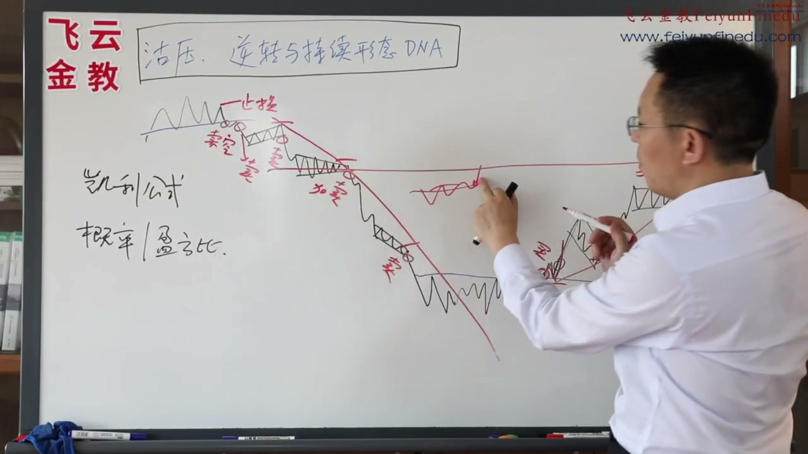
有过结构的量能盘整位 好 我举个例子 这个地方我要是买 那么我的概率是大还是小 我的止损在这儿 那么我的止盈在哪儿 第一止盈至少看到这儿来 是不是 为什么 从这儿到这儿之间 根本就没有什么成交 是不是 那如果我这段是发生在这 假设这段突破是发生在这 那么我的这个估压是不是比较很近啊 我的盈亏比较很小啊 那么我的止损在这 我就可能以一万块钱的止损 我只能够赚两万块钱的利润 那么我这样子亏两三次 那不是亏大了 而这个地方我买 我一万块钱的止损在这 但是我的目标利润至少五万 那么就是一比五的孤鸭贷
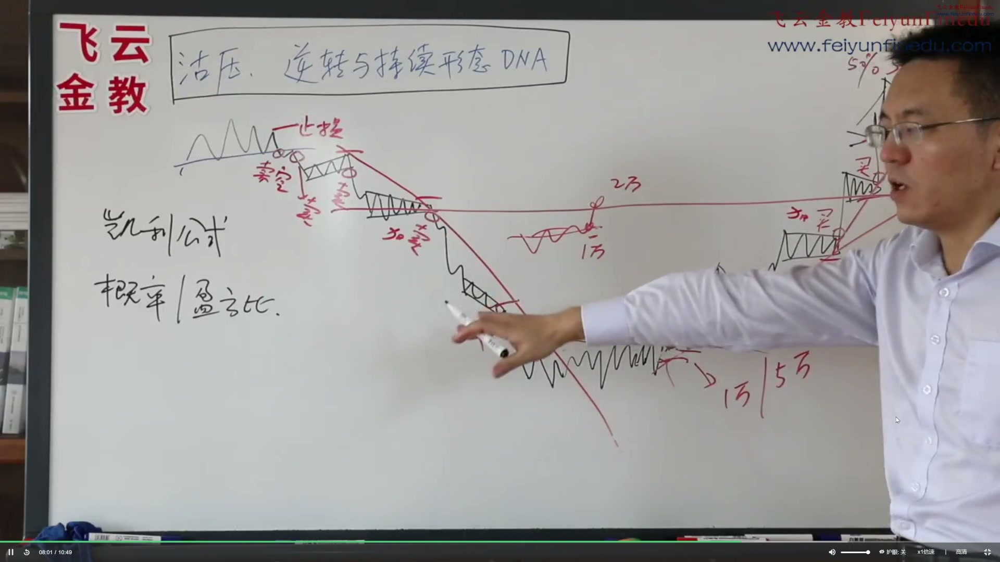
当你在这个地方遇到机会好的时候 离孤鸭很远的时候 你就多加一点钱 当你在这个地方离孤鸭很近的时候 你就少放一点钱 只有这样子才能够让你始终小亏大赚 不然的话 你不考虑估压 不考虑盈亏比 你的资金永远是起起伏伏的 就是说 以前你只是靠概念力来赚钱 你的资金曲线永远是这样子 转转转 趴在回来 又转转转 又趴在下回来 但是一旦你把这个盈亏比 估压这个概念考虑进去的时候 你的资金曲线就彻底变了 你都会这样子 往上赚钱 亏钱 怎么亏啊 你就亏 亏到这儿来就行了 然后你再赚钱
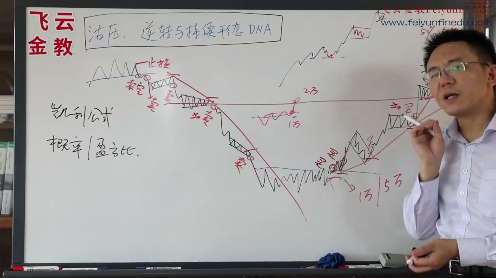
又亏钱 亏到这儿 那么你的资金曲线 永远都是大赚小赔 所以估压和盈亏比 非常非常重要 非常非常重要 这个就是凯利公式 概率与盈亏比的关系 所以你每次计算的时候 就通过前期的估压位 量的位 看它近不近 它只要是很远 那么就证明这一波行情 啪的就上去了 那么如果它很近 那证明什么 证明你有压力位 你先出来 等到它压力位突破了 你再进去 还有一种就是海阔天空 就像我们这种 以前一个股票在这儿 盘盘盘在这儿 盘了好多年 终于把所有的高价 全部都冲破了上去 那么这种股价 有两种可能 一种可能没人做 我看还是会下来 还有种可能就是海货天空 谁都不知道会涨到哪 就一直涨上去 最近我们不是有一个A股的股票吗
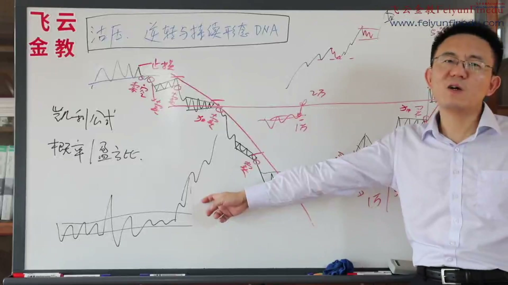
根本看不出来 它是值千亿的一个价值 后来一年就涨上去了 为什么 它没有任何的压力 只要有人一拿就上去 一拿就上去 没有任何的卖盘 所以股票这个东西 或者是一些品种 永远都是突破了关键价位 全部突破 千万千万不要轻易看空 大家一定要小心 因为他就没有护押了 是不是 不存在护押的 他没这种知识 它只有它没有压了 它每次就是支撑了 回调就有支持 回调就有支持 回调就有支撑 所以一直把股价推的很高 好 这就是我们这基本上所有的一个方法 用股压 用逆转与持续 我们来做到一些股市的一些结构分析 然后我们在PPT上面 我在我们的案例分析里面